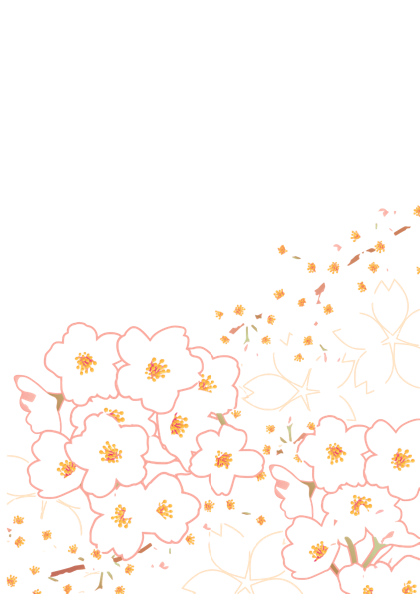
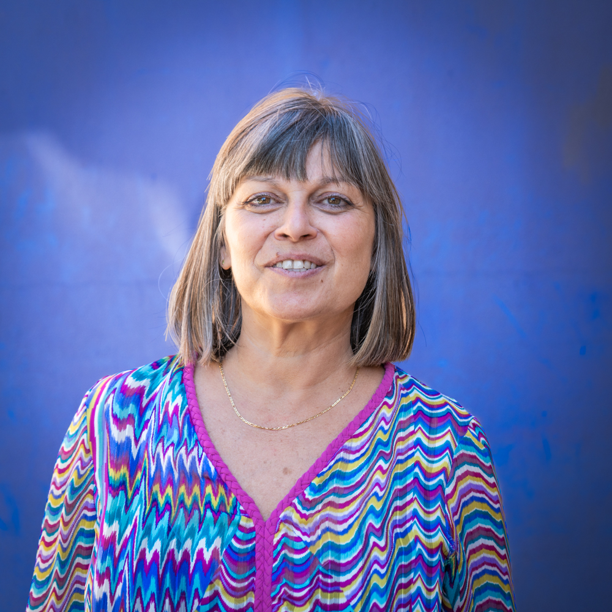
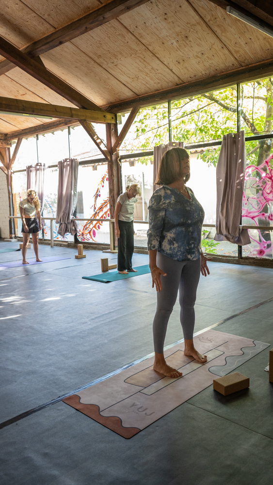
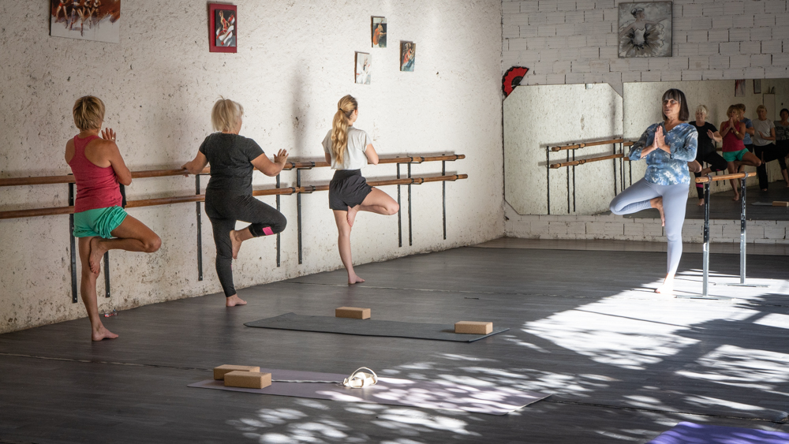
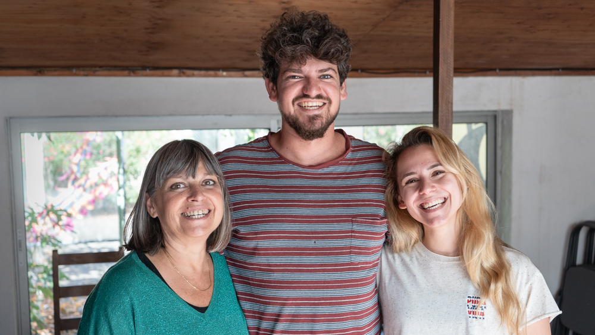

Céline Bavay
Une biterroise partie et revenue. Une rencontre avec le yoga Iyengar (hatha yoga) en 1995. Des années de pratiques intensives, deux grossesses et puis un engagement vers l’enseignement, 3 ans de travail et diplômée en 2007. Il m’en aura fallu du temps pour ouvrir mon centre de yoga. Travaillant et donnant des cours dans différents lieux, j’ai continué à m’enrichir , sur le plan personnel mais aussi philosophique. 2023, le centre Intervalle Yoga prend forme. En ce qui me concerne, j’ai vécu 8 ans en Amérique latine, voyages, expériences dans différents enseignements et professeurs ont fait que je me suis appropriée mon yoga et je l’enseigne avec simplicité, enthousiasme et convivialité. J’utilise beaucoup de support couverture, sangle, chaise, bolster, mur, brique…pour vous emmener à percevoir une pratique profonde, intelligente et à la portée de tout le monde. Pratique et philosophie tel est le yoga, cela consiste à prendre soin de son corps et de l’esprit vers plus de sérénité et un bien-être afin de trouver de la paix intérieure. Aujourd’hui c’est mon but, mon métier, mon plaisir et j’espère que ce plaisir sera partagé.

Enseignement
Ergo ego senator inimicus, si ita vultis, homini, amicus esse, sicut semper fui, rei publicae debeo. Quid? si ipsas inimicitias, depono rei publicae causa, quis me tandem iure reprehendet, praesertim cum ego omnium meorum consiliorum atque factorum exempla semper ex summorum hominum consiliis atque factis mihi censuerim petenda. Ergo ego senator inimicus, si ita vultis, homini, amicus esse, sicut semper fui, rei publicae debeo. Quid? si ipsas inimicitias, depono rei publicae causa, quis me tandem iure reprehendet, praesertim cum ego omnium meorum consiliorum atque factorum exempla semper ex summorum hominum consiliis atque factis mihi censuerim petenda.


Ergo ego senator inimicus, si ita vultis, homini, amicus esse, sicut semper fui, rei publicae debeo. Quid? si ipsas inimicitias, depono rei publicae causa, quis me tandem iure reprehendet, praesertim cum ego omnium meorum consiliorum atque factorum exempla semper ex summorum hominum consiliis atque factis mihi censuerim petenda. Ergo ego senator inimicus, si ita vultis, homini, amicus esse, sicut semper fui, rei publicae debeo. Quid? si ipsas inimicitias, depono rei publicae causa, quis me tandem iure reprehendet, praesertim cum ego omnium meorum consiliorum atque factorum exempla semper ex summorum hominum consiliis atque factis mihi censuerim petenda.
Horaires
| Lundi | 18:00 - 20:00 | ||
|---|---|---|---|
| Mardi | 10:00 - 11:30 | 12:15 - 13:30 | SERIGNAN |
Mercredi | PUIMISSON 10:00 - 12:00 |
| Jeudi | SERIGAN 9:30 - 11:00 |
12:15 - 13:30 | 18:00 - 20:00 |
| Vendredi | 10:00 - 11:30 | 10:00 - 12:00 | 10:00 - 12:00 |
| Débutant Intermédiaire |
Avancé |
|---|
Tarifs

Cours à l'unité : 18€
Cours d'essai : 5€
Cours individuel : 45€
Réduction couple et étudiant : -10%
Adhésion à l'association : 10€
Trimestre / Année1 cours par semaine :
140€ / 380€
2 cours par semaine :
204€ / 660€
Cours illimités :
300€ / 750€

Contacts
Céline Bavay - 06 43 58 85 59
13 QUAI PORT NEUF 34500 BEZIERS